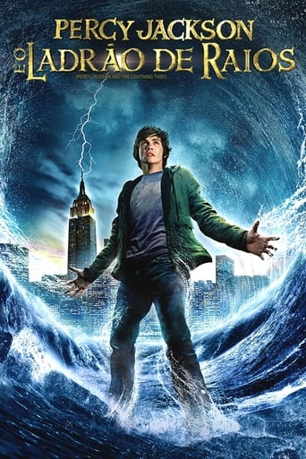

Estante de Livros
Sua biblioteca à um clique de distância
Sumário
- Harry Potter e a pedra filosofal
- O Senhor dos Anéis: A sociedade do Anél
- Percy Jackson e o ladrão de raios
- Alice no pais das Maravilhas
- O guia do mochileiro das galaxias
1. Harry Potter e a pedra filosofal
Sinopse
Harry Potter nunca tinha ouvido falar em Hogwarts até o momento em que as CARTAS começam a aparecer no capacho do número 4 da rua dos Alfeneiros. Endereçadas com um LACRE PÚRPURA, elas são repidamente confiscadas por seus tios TERRÍVEIS. E então, no décimo primeiro aniversário de Harry, um homem GIGANTESCO com olhos luzindo como besouros negros chamado RÚBEO HAGRID entra intempestivamente com uma notícia ASSOMBROSA: Harry Potter é um bruxo e tem uma vaga na ESCOLA DE MAGIA E BRUXARIA DE HOGWARTS. Uma aventura inacreditável está para começar!
fonte: Google Books
| Data da primeira publicação |
Autor |
Idioma Original |
Generos |
| 26 de junho de 1997 |
J.K. Rowling |
Inglês |
Romance, Literatura infantil, literatura fantastica, Alta fantasia |
2. O Senhor dos Anéis: A sociedade do Anél
Sinopse
O volume inicial de O Senhor dos Anéis, lançado originalmente em julho de 1954, foi o primeiro grande épico de fantasia moderno, conquistando milhões de leitores e se tornando o padrão de referência para todas as outras obras do gênero até hoje. A imaginação prodigiosa de J.R.R. Tolkien e seu conhecimento profundo das antigas mitologias da Europa permitiram que ele criasse um universo tão complexo e convincente quanto o mundo real. A Sociedade do Anel começa no Condado, a região rural do oeste da Terra-média onde vivem os diminutos e pacatos hobbits. Bilbo Bolseiro, um dos raros aventureiros desse povo, cujas peripécias foram contadas em O Hobbit, resolve ir embora do Condado e deixa sua considerável herança nas mãos de seu jovem parente Frodo. O mais importante legado de Bilbo é o ane...
fonte: Google Books
| Data da primeira publicação |
Autor |
Idioma Original |
Generos |
| 1983 |
J.R.R. tolkien |
Inglês |
Literatura fantastica |
3. Percy Jackson e o ladrão de raios

Sinopse
Primeiro volume da saga Percy Jackson e os olimpianos, O ladrão de raios esteve entre os primeiros lugares na lista das séries mais vendidas do The New York Times. O autor conjuga lendas da mitologia grega com aventuras no século XXI. Nelas, os deuses do Olimpo continuam vivos, ainda se apaixonam por mortais e geram filhos metade deuses, metade humanos, como os heróis da Grécia antiga. Marcados pelo destino, eles dificilmente passam da adolescência. Poucos conseguem descobrir sua identidade. O garoto-problema Percy Jackson é um deles. Tem experiências estranhas em que deuses e monstros mitológicos parecem saltar das páginas dos livros direto para a sua vida. Pior que isso: algumas dessas criaturas estão bastante irritadas. Um artefato precioso foi roubado do Monte Olimpo e Percy é o pri...
fonte: Google Books
| Data da primeira publicação |
Autor |
Idioma Original |
Generos |
| 15 de dezembro 2011 |
Rick Riordan |
Inglês |
Mitologia grega, Romance, Quadrinhos |
4. Alice no país das maravilhas

Sinopse
Quem não se lembra do Coelho Branco, do Gato de Cheshire, da Lebre de Março, do Chapeleiro Maluco, da Rainha de Copas... e da incontornável Alice...? As personagens que Lewis Carroll imortalizou num clássico único para todas as idades. Viaje pelo mundo da imaginação e do nonsense onde tudo é possível!
fonte: Google Books
| Data da primeira publicação |
Autor |
Idioma Original |
Generos |
| 28 de fevereiro 2012 |
Lewis Carrol |
Inglês |
Literatura infantil, Literatura fantástica, Ficção Absurdista, Fantástico |
5. O guia do mochileiro das galaxias
Sinopse
Considerado um dos maiores clássicos da literatura de ficção científica, O Guia do Mochileiro das Galáxias vem encantando gerações de leitores ao redor do mundo com seu humor afiado.
Este é o primeiro título da famosa série escrita por Douglas Adams, que conta as aventuras espaciais do inglês Arthur Dent e de seu amigo Ford Prefect.
A dupla escapa da destruição da Terra pegando carona numa nave alienígena, graças aos conhecimentos de Prefect, um E.T. que vivia disfarçado de ator desempregado enquanto fazia pesquisa de campo para a nova edição do Guia do Mochileiro das Galáxias, o melhor guia de viagens interplanetário.
Mestre da sátira, Douglas Adams cria personagens inesquecíveis e situações mirabolantes para debochar da burocracia, dos políticos, da "alta cultura" e de diversas instituições atuais. Seu livro, que trata em última instância da busca do sentido da vida, não só diverte como também faz pensar.
fonte: Google Books
| Data da primeira publicação |
Autor |
Idioma Original |
Generos |
| 12 de outubro de 1979 |
Douglas Adams |
Inglês |
Ficção científica, Romance, Humor, Ficção científica cômica, Ficção humorística |